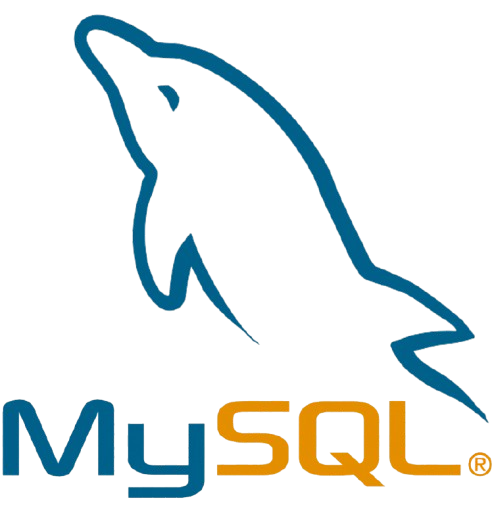
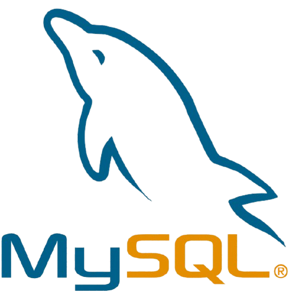

Gestion de Facture
Créez, gérez et suivez vos factures facilement
Présentation du projet
Entreprise : Alison
Secteur : Logiciels et services pour la gestion des cours d’eau et l’assainissement environnemental
Durée : 2 mois
Poste : Développeur web / stagiaire en développement full stack
Description : Le projet Canoë vise à développer une plateforme web permettant aux clients de l’entreprise
Alison de gérer et suivre les données relatives à l’assainissement et à la qualité des cours d’eau. En
tant que développeur web, j’ai été chargé de concevoir et de mettre en place un back-office pour la gestion
des informations clients et des projets environnementaux, ainsi qu’un espace client pour la consultation
et la gestion des données collectées sur le terrain.
Objectif
Développer un back-office et un espace client pour le site Canoë d'Alison, afin de faciliter la gestion des données de collecte et l’assainissement des cours d’eau.
Technologies utilisées
- PHP pour le développement back-end et la gestion des interactions avec la base de données
- HTML / CSS / JavaScript pour la partie front-end et l’interface utilisateur
- MySQL pour le stockage et la gestion des données clients et projets
Réponse au besoin
Pour répondre aux besoins d'Alison, j'ai conçu un back-office permettant :
- la gestion des utilisateurs et des permissions,
- la consultation et l’édition des données de collecte,
- la génération de rapports et statistiques sur les interventions,
- l’optimisation de l’interface pour une utilisation facile et intuitive.


 

Contexte
L’entreprise Alison propose des solutions logicielles permettant de collecter, gérer et analyser des données
liées à l’assainissement et à la qualité des cours d’eau.
Le site Canoë est une plateforme destinée à la fois aux clients et aux agents de terrain pour suivre et
gérer ces données de manière efficace.
Retrouvez le code sur GitHub

Vous pouvez consulter le code source de ce projet sur GitHub.